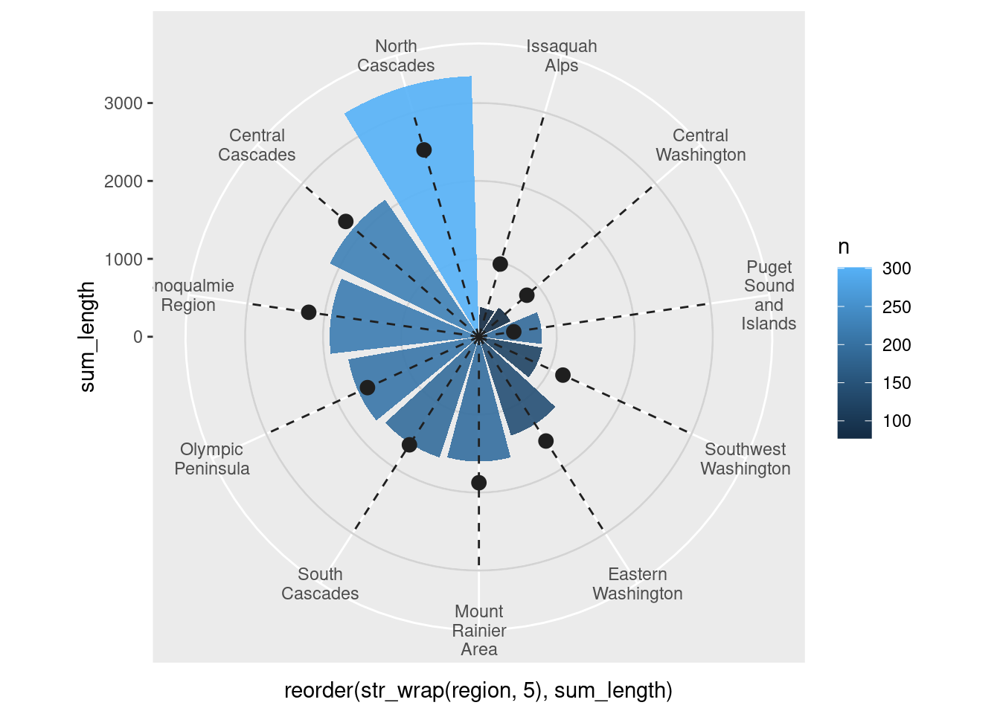
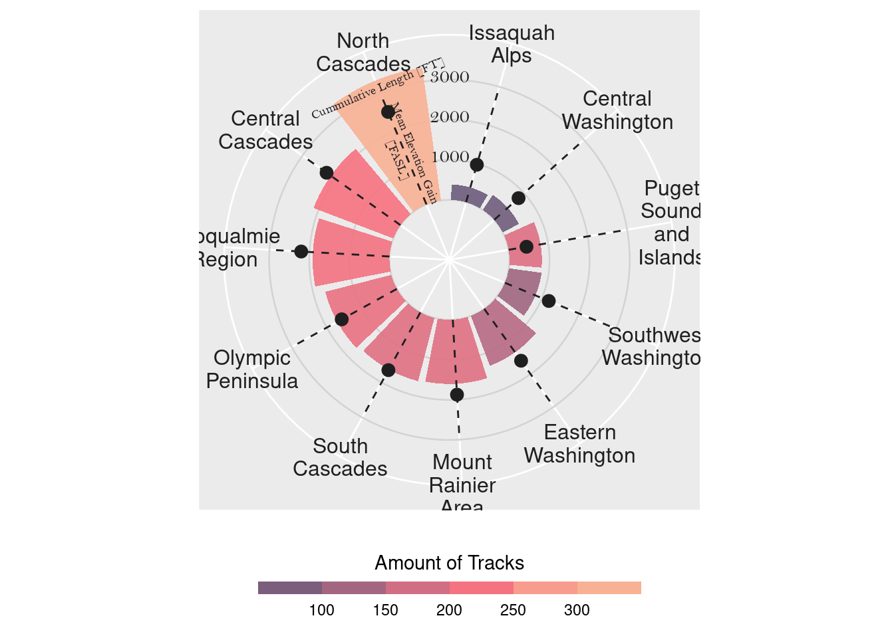
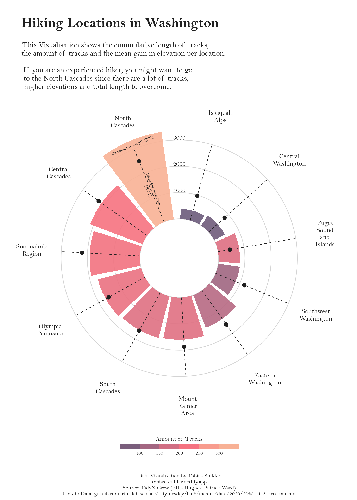

About
This page showcases the work of Tobias Stadler. You can find the original code on Tobias’ GitHub here.
Thanks to him for accepting sharing his work here! Thanks also to Tomás Capretto who split the original code into this step-by-step guide! 🙏🙏
As a teaser, here is the plot we’re gonna try building:

Load packages
As usually, let’s start by loading some libraries. Today’s plot does
not depend on too many packages. All we need is just
dplyr, ggplot2, and stringr for
some string manipulations.
library(dplyr)
library(ggplot2)
library(stringr)
Today, the plot is going to be based on the
Bell MT font. If you are unsure about how to work
with custom fonts in R,
this post
is for you.
Load and prepare the data
This guide shows how to create a beautiful circular barplot to visualize several characteristics of hiking locations in Washington.
The data for this post comes from Washington Trails Association courtesy of the TidyX crew, Ellis Hughes and Patrick Ward. This guide uses the dataset released for the TidyTuesday initiative on the week of 2020-11-24. You can find the original announcement and more information about the data here. Thank you all for making this possible!
Let’s start by loading the dataset:
hike_data <- readr::read_rds(url('https://raw.githubusercontent.com/rfordatascience/tidytuesday/master/data/2020/2020-11-24/hike_data.rds'))
The first step is to extract the region from the
location column. This is given by the text before the
"--".
hike_data$region <- as.factor(word(hike_data$location, 1, sep = " -- "))A similar approach is used to extract the number of miles.
hike_data$length_num <- as.numeric(sapply(strsplit(hike_data$length, " "), "[[", 1))And finally, compute the cumulative length and mean gain for each region, as well as recording the number of tracks per region.
plot_df <- hike_data %>%
group_by(region) %>%
summarise(
sum_length = sum(length_num),
mean_gain = mean(as.numeric(gain)),
n = n()
) %>%
mutate(mean_gain = round(mean_gain, digits = 0))Basic radar chart
Converting a plot from cartesian to circular (polar) coordinates in
ggplot2 is as easy as adding a
coord_polar() call to the plot.
plt <- ggplot(plot_df) +
# Make custom panel grid
geom_hline(
aes(yintercept = y),
data.frame(y = c(0:3) * 1000),
color = "lightgrey"
) +
# Add bars to represent the cumulative track lengths
# str_wrap(region, 5) wraps the text so each line has at most 5 characters
# (but it doesn't break long words!)
geom_col(
aes(
x = reorder(str_wrap(region, 5), sum_length),
y = sum_length,
fill = n
),
position = "dodge2",
show.legend = TRUE,
alpha = .9
) +
# Add dots to represent the mean gain
geom_point(
aes(
x = reorder(str_wrap(region, 5),sum_length),
y = mean_gain
),
size = 3,
color = "gray12"
) +
# Lollipop shaft for mean gain per region
geom_segment(
aes(
x = reorder(str_wrap(region, 5), sum_length),
y = 0,
xend = reorder(str_wrap(region, 5), sum_length),
yend = 3000
),
linetype = "dashed",
color = "gray12"
) +
# Make it circular!
coord_polar()
plt

Not too bad! It’s clear the plot isn’t ready for publication yet. But
the take-home message so far must be about how easy it is to convert
one regular plot into a circular plot by using
coord_polar(). Now, wanna make it better? Let’s do it!
Add annotations and legend
It’s not clear what is represented by the height of the bars in the plot above. There are some vertical tick marks, but they aren’t definitely placed in the right place. And what about the color? What does it mean? Let’s improve this!
plt <- plt +
# Annotate the bars and the lollipops so the reader understands the scaling
annotate(
x = 11,
y = 1300,
label = "Mean Elevation Gain\n[FASL]",
geom = "text",
angle = -67.5,
color = "gray12",
size = 2.5,
family = "Bell MT"
) +
annotate(
x = 11,
y = 3150,
label = "Cummulative Length [FT]",
geom = "text",
angle = 23,
color = "gray12",
size = 2.5,
family = "Bell MT"
) +
# Annotate custom scale inside plot
annotate(
x = 11.7,
y = 1100,
label = "1000",
geom = "text",
color = "gray12",
family = "Bell MT"
) +
annotate(
x = 11.7,
y = 2100,
label = "2000",
geom = "text",
color = "gray12",
family = "Bell MT"
) +
annotate(
x = 11.7,
y =3100,
label = "3000",
geom = "text",
color = "gray12",
family = "Bell MT"
) +
# Scale y axis so bars don't start in the center
scale_y_continuous(
limits = c(-1500, 3500),
expand = c(0, 0),
breaks = c(0, 1000, 2000, 3000)
) +
# New fill and legend title for number of tracks per region
scale_fill_gradientn(
"Amount of Tracks",
colours = c( "#6C5B7B","#C06C84","#F67280","#F8B195")
) +
# Make the guide for the fill discrete
guides(
fill = guide_colorsteps(
barwidth = 15, barheight = .5, title.position = "top", title.hjust = .5
)
) +
theme(
# Remove axis ticks and text
axis.title = element_blank(),
axis.ticks = element_blank(),
axis.text.y = element_blank(),
# Use gray text for the region names
axis.text.x = element_text(color = "gray12", size = 12),
# Move the legend to the bottom
legend.position = "bottom",
)
plt

Final chart
The plot above is much clearer than its previous version. However, it still needs some tweaks to be ready to be published. First of all, default font is replaced with Bell MT. It adds a nice touch that makes it look much better. Then, the background is changed to white. The default gray one doesn’t feel quite right for this chart. And finally, we add good labels that make it easier to transmit what this chart is about.
plt <- plt +
# Add labels
labs(
title = "\nHiking Locations in Washington",
subtitle = paste(
"\nThis Visualisation shows the cummulative length of tracks,",
"the amount of tracks and the mean gain in elevation per location.\n",
"If you are an experienced hiker, you might want to go",
"to the North Cascades since there are a lot of tracks,",
"higher elevations and total length to overcome.",
sep = "\n"
),
caption = "\n\nData Visualisation by Tobias Stalder\ntobias-stalder.netlify.app\nSource: TidyX Crew (Ellis Hughes, Patrick Ward)\nLink to Data: github.com/rfordatascience/tidytuesday/blob/master/data/2020/2020-11-24/readme.md") +
# Customize general theme
theme(
# Set default color and font family for the text
text = element_text(color = "gray12", family = "Bell MT"),
# Customize the text in the title, subtitle, and caption
plot.title = element_text(face = "bold", size = 25, hjust = 0.05),
plot.subtitle = element_text(size = 14, hjust = 0.05),
plot.caption = element_text(size = 10, hjust = .5),
# Make the background white and remove extra grid lines
panel.background = element_rect(fill = "white", color = "white"),
panel.grid = element_blank(),
panel.grid.major.x = element_blank()
)
# Use `ggsave("plot.png", plt,width=9, height=12.6)` to save it as in the output
plt

Simple and beautiful!